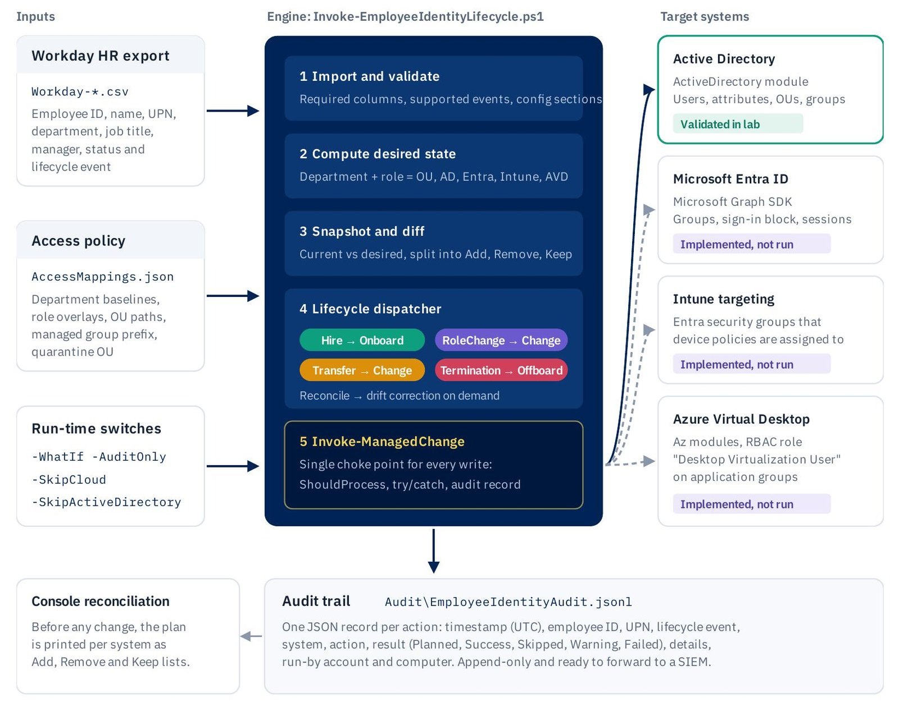
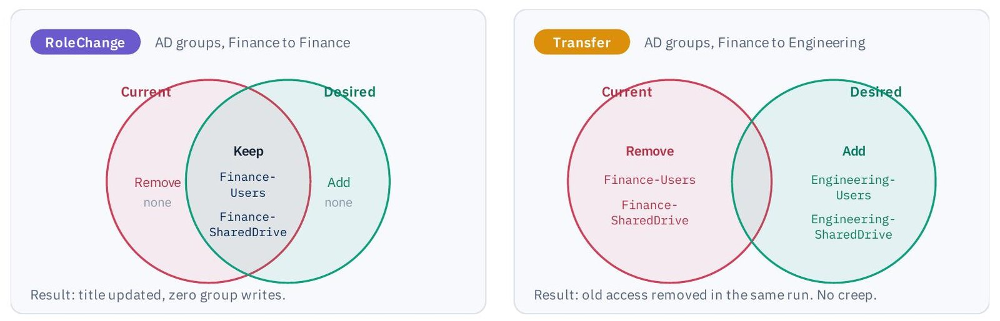
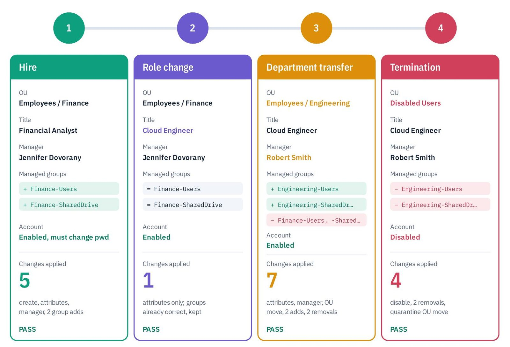
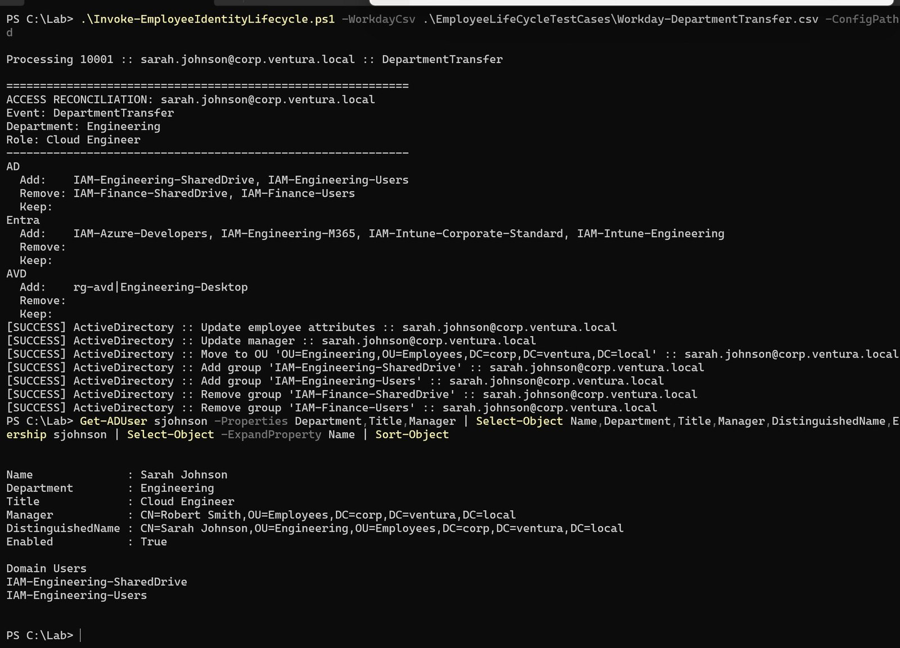

Access that follows people: a desired-state engine for joiners, movers and leavers
How I replaced the manual identity checklist with a PowerShell engine that reads HR data, computes the access each person should hold, and changes only the difference — with every write previewable, repeatable and on the record.
Every organization repeats the same identity work. A person is hired, changes roles, moves departments, and eventually leaves. Identity teams call it Joiner-Mover-Leaver, and it is one of the highest-volume and highest-risk workflows in IT, because access is the front door to every system a company owns.
In most IT departments each of those events is still a ticket and a checklist. HR sends an email. A technician opens Active Directory Users and Computers, types the user's details, picks an OU, and — very often — copies group memberships from "someone in the same team." Cloud apps, device policies and virtual desktops follow in other consoles. Every hand-off depends on someone reading the ticket correctly and remembering every step.
I wanted to see how much of that checklist could become an engine, and how safely.
Where the manual process actually breaks
The failures are predictable enough to list, and each one maps to a lifecycle event.
- Joiners wait for access, or inherit someone else's permissions through "copy user"
- Movers receive new access, but old access is rarely removed, so privileges accumulate for years
- Leavers depend on a ticket reaching IT on time, and a missed step leaves a working account behind a former employee
The mover case is the quiet one, and it is the one auditors look for first. New access is requested loudly, because someone needs it to do their job. Removal of old access has no requester at all, so it is skipped. Finance groups plus Engineering groups equals both, forever. That is privilege creep, and no amount of diligence fixes it while removal depends on someone remembering.
So the design goal became one sentence: make HR data the only input a person has to get right. Everything downstream — account creation, attributes, OU placement, group membership, removal — should be computed, applied consistently, safe to preview, and provable after the fact.
Desired state, not scripted clicks
The obvious way to automate a checklist is to script the clicks: on a hire, create the user and add these groups; on a transfer, move the user and add those groups. That approach reproduces the manual process faithfully, including its central flaw. A script of additions never removes anything unless someone writes the removal too, for every combination of old and new role.
I took the approach infrastructure-as-code tools use instead. The engine does not script actions. It declares what access should exist for this person, reads what access does exist, and reconciles the two. A transfer then removes old access as naturally as it grants new access, because both fall out of the same comparison.

The engine is a single 983-line PowerShell script organized into 30 functions across seven layers. It takes three inputs. A Workday-style HR export is the single source of truth: employee ID, name, UPN, department, job title, manager, status and lifecycle event. A JSON access policy maps departments and roles to access. And a handful of run-time switches control how far a run is allowed to go.
Access composed from two layers
Desired access is calculated as a department baseline plus a role overlay. The department decides the OU and the core groups every member needs — Finance members get IAM-Finance-Users and IAM-Finance-SharedDrive, a Microsoft 365 group, a standard Intune targeting group and a Finance virtual desktop. The job title adds role-specific entitlements on top: a Financial Analyst gains a Power BI group, a Cloud Engineer gains Azure developer and Intune engineering groups.
Both layers live in one JSON file. Changing access policy is a configuration change, not a code change, which means the logic that has already been tested does not have to be rewritten every time the organization reorganizes.
The reconciliation core is deliberately boring
The heart of the engine is a function called Compare-AccessSet. It takes the current set of groups and the desired set, normalizes both, and returns three lists: Add, Remove and Keep. It has no side effects, the same function serves Active Directory, Entra ID, Intune and Azure Virtual Desktop, and it is trivial to unit test.

The most important code in an identity system should be the least interesting code in it.
Set arithmetic is not clever, and that is the point. Every access decision the engine makes can be explained by pointing at two lists and their difference. There is no branching on event type buried in the group logic, no special case for "moved from Finance to Engineering," and therefore no combination of old and new role that someone forgot to handle.
Limiting the blast radius with a naming prefix
Automation that manages group membership can do enormous damage very quickly, so the engine only ever reads and changes groups whose names begin with IAM-. The filter is applied before the comparison, not after, so an unmanaged group can never appear in the Remove list in the first place. Built-in groups like Domain Users, break-glass accounts and hand-managed project groups stay entirely outside its reach.
A naming prefix sounds like housekeeping. Here it is a security control. It also makes ownership obvious to anyone browsing the directory: if a group starts with IAM-, a person should not be editing it by hand.
Every write goes through one door
The second design decision I would defend hardest is that no connector writes to a directory directly. Every change — create a user, update an attribute, add a group, disable an account — is passed as a script block to a single function, Invoke-ManagedChange. That function is the only place a write can happen, and it does four things every time.
- In -AuditOnly mode, it records the change as Planned and returns without touching anything
- Otherwise it asks PowerShell's ShouldProcess, so -WhatIf and high-impact confirmation prompts work natively
- It runs the change inside a try/catch and records Success, or Failed with the exception message
- It appends a structured record to a JSONL audit trail: UTC timestamp, employee ID, UPN, event, system, action, result, details, run-by account and computer
Because there is exactly one path to a write, there is no way to change access off the record. The audit trail is one JSON object per line, append-only, in a format a SIEM can ingest directly.
Around that choke point the script fails safe and fails loudly. Strict mode and stop-on-error turn silent mistakes into exceptions. Each employee is processed inside its own try/catch, so one malformed record is logged without halting the batch. And the HR input has a contract: a missing required column, an empty file or an unknown lifecycle event stops the run before any change is attempted. Users are matched on the immutable employeeID attribute, never on a display name that two people can share.
One employee, four lifecycle events
To test it, I took a single identity through the entire lifecycle against a live Active Directory domain, corp.ventura.local, from its domain controller. Four HR records all shared employee ID 10001, Sarah Johnson, exactly as a real employee's records would. Every run used -SkipCloud. After each one I verified the result twice, independently: from PowerShell with Get-ADUser and group membership queries, and visually in Active Directory Users and Computers.

Hire. A Financial Analyst in Finance, reporting to Jennifer Dovorany. The engine created the account in the Finance OU with a must-change-at-logon password, set the title and department, resolved the manager's UPN to a distinguished name and wrote the manager attribute, then added both Finance baseline groups. Five changes. The audit folder did not exist before the run; the engine created it, which confirmed the logging path works on a clean system.
Role change. Same person, same department, new title: Cloud Engineer. This is the test that proves idempotency. The plan showed both Finance groups under Keep, with nothing to add or remove in Active Directory, and the engine made one change — the attribute update. No group was removed and re-added, and no manager write was issued because the manager had not changed. A naive script would have churned every group on every run, adding log noise and brief access gaps.
Department transfer. Now in Engineering, reporting to Robert Smith. This is the mover case, the one manual processes get wrong.

The engine updated attributes and manager, moved the account to the Engineering OU, added the two Engineering groups, and removed both Finance groups in the same run. No Finance access remained afterwards. Nobody had to remember to take it away, because nothing in the desired state justified keeping it.
Termination. Status Terminated. For a leaver, the desired access is empty on every system. The engine disabled the account, removed every managed group, and moved it to a Disabled Users quarantine OU. Four changes. Domain Users remained, untouched, because it was never the engine's to manage.
Two details in termination are deliberate. First, a Status of Terminated or Inactive forces the empty desired state even if the lifecycle event column is wrong — defense in depth against a data-entry mistake that would otherwise leave a leaver's access intact. Second, the account is quarantined rather than deleted. Deleting destroys the SID, group history and ownership links. Disabling and moving preserves evidence for audits and legal holds, supports rehires, and gives the business time to hand over files. In the cloud path, the same event also blocks Entra sign-in, revokes active sessions and removes virtual desktop role assignments.
Across the four tests, all fourteen expected outcomes were verified, seventeen directory changes were applied, and no unmanaged group was touched.
Honest scope
The Active Directory path was executed and verified end to end. The Microsoft Entra ID, Intune and Azure Virtual Desktop connectors are fully implemented — Graph SDK calls for groups, sign-in blocking and session revocation; Az RBAC assignments on AVD application groups — but they were run under -SkipCloud, because the lab has no cloud tenant yet. The engine reports that honestly on every run: Entra and AVD keep showing pending additions until a cloud run reconciles them.
A lab is allowed shortcuts that a production identity system is not, and I would rather name them than let a reader assume they were solved. The initial password sits in plaintext in the policy file; in production it should be a unique random value per user, or a Temporary Access Pass, with secrets in Key Vault. The engine runs as the domain Administrator; it should run as a group managed service account with rights delegated only on the relevant OUs and groups. Graph sign-in is interactive and over-privileged; it should be a certificate-authenticated app registration scoped to the permissions it needs. CSV values flow into AD filter strings and need validating and escaping. And the audit log lives on the domain controller's disk, where it can be altered or lost with the server; it belongs in a SIEM with immutable retention and alerts on Failed results.
What reviewing my own output taught me
Reading the test output critically surfaced refinements that are small in code and meaningful in operations. The attribute update runs on every event even when nothing changed, which makes the audit log noisier than it should be; it should compare before writing. A terminated account keeps its manager and title, which should be cleared and stamped. The Cloud Engineer role currently adds only cloud entitlements, so the role-scoped AD groups already sketched in the project README need a policy entry. And the tests are verified by reading output, which is exactly the kind of check that should become a Pester regression suite.
None of those change the architecture. That is what I most wanted the design to achieve: new capabilities arrive as connectors or policy entries, not rewrites.
Automation earns trust by being previewable before it acts and provable after it does.
PowerShell · Active Directory · Microsoft Graph SDK · Microsoft Entra ID · Intune · Azure Virtual Desktop · JSON · JSONL audit
Read the full engineering dossier →
The full technical report, with uncropped lab screenshots and expected-versus-observed tables for every test, is available on request. More of my work is at esmeraldaspace.com, and I am reachable on LinkedIn.